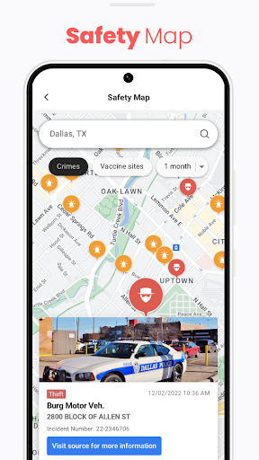

Newsbreak

Purpose: Aggregated local news and information dissemination
- Personalized News Feed: Curates news based on user preferences and location.
- Local News Aggregation: Compiles news from various local sources, including crime reports and community events.
- Weather and Traffic Updates: Provides timely information relevant to daily activities.
Strengths
- Broad coverage of topics beyond safety, including events and local news.
- User-friendly interface with customizable news preferences.
- High adoption rate with over 50 million downloads.
Limitations
- Less emphasis on real-time safety alerts compared to Citizen.
- May not provide immediate notifications during emergencies.
- Relies on third-party news sources, which may lead to delays in information dissemination.